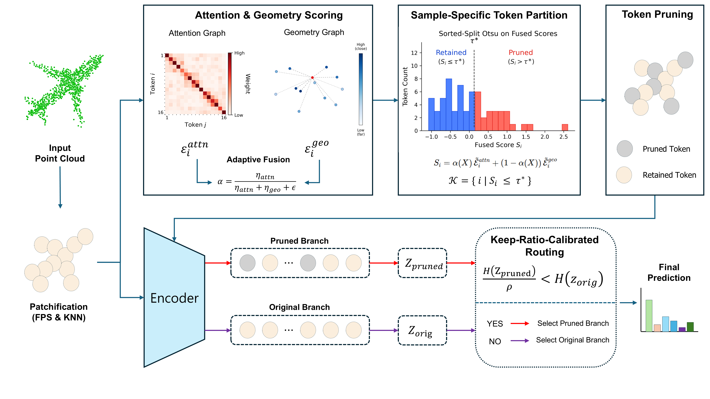

Overview of the proposed SATOR framework. SATOR introduces backpropagation-free 3D test-time adaptation via sample-adaptive token routing, achieving state-of-the-art accuracy across ModelNet40-C, ScanObjectNN-C, and ShapeNet-C without multiple forward passes.
Test-time adaptation (TTA) mitigates the performance degradation of source-pretrained models on unlabeled test data under distribution shifts. Recent backpropagation-free token-purging methods address 3D point cloud distribution shifts by filtering unreliable tokens. However, their reliance on predefined purge-size candidates requires multiple forward passes per sample and increases inference cost.
We propose SATOR (Sample-Adaptive TOken Routing), a source-free and backpropagation-free 3D TTA framework that eliminates this search by deriving both the partitioning threshold and routing decision directly from each sample. SATOR computes token abnormality scores from complementary attention and geometric relation graphs. It then derives a sample-specific partition into retained and pruned tokens via Otsu-based separability, without evaluating candidate sizes. Keep-ratio-calibrated routing then selects the pruned prediction only when its entropy, penalized by the keep ratio, is lower than that of the original prediction. Extensive experiments on ModelNet40-C, ScanObjectNN-C, and ShapeNet-C demonstrate that SATOR achieves state-of-the-art accuracy on three 3D corruption benchmarks.
If you find SATOR useful in your research, please consider citing:
@inproceedings{kong2027sator,
title={SATOR: Backpropagation-Free 3D Test-Time Adaptation via Sample-Adaptive Token Routing},
author={Kong, Inseok and Jung, Geunyoung and Jung, Jiyoung},
booktitle={IEEE/CVF Winter Conference on Applications of Computer Vision (WACV)},
year={2027}
}